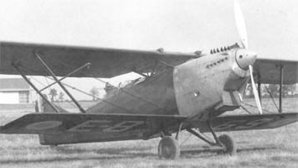

Amiot 125

- Разработчик: Amiot
- Страна: Франция
- Первый полет: 1931
- Тип: Бомбардировщик-штурмовик
В начале тридцатых компания Amiot разработала несколько вариантов бомбардировщика-штурмовика Amiot 122 с более
мощными силовыми установками. Вторым вариантом был Amiot 125 Bp3 c W-образным поршневым мотором Renault 18Jbr
мощностью 900 л. с. (671 кВт).
Новый двигатель позволил увеличить бомбовую нагрузку до 800 килограмм, но лишь немного улучшить летные характеристики.
Как и с Amiot 124 военные посчитали конструкцию самолета уже устаревшей и дальше испытаний дело не пошло.
После двух неудач последний вариант самолета Amiot 126 использовали только для испытаний двигателя Lorraine-Dietrich
18Gad Orion, также развивавший 900 л.с.
| Летно технические характеристики | |
|---|---|
| Модификация | Amiot 125 |
| Размах крыла, м | 21.50 |
| Длина, м | 13.72 |
| Высота, м | 5.15 |
| Масса, кг | |
| - пустого самолета | 2260 |
| - нормальная взлетная | 3780 |
| Тип двигателя | 1 ПД Renault 18Jbr |
| Мощность, л.с. | 1 х 900 |
| Максимальная скорость , км/ч | 215 |
| Крейсерская скорость , км/ч | 195 |
| Практическая дальность, км | 700 |
| Практический потолок, м | 6300 |
| Экипаж, чел | 3 |
| Вооружение: | пять 7,5-мм пулеметов бомбовая нагрузка - до 800 кг |